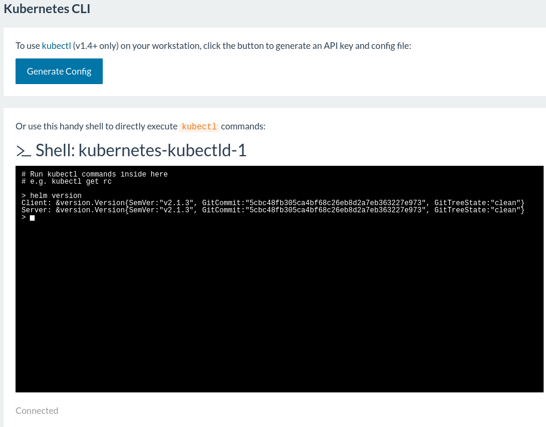

Kubernetes 插件
Rancher 会自动安装好 Kubernetes 插件以提高用户使用Kubernetes的体验. 如果你想要关闭这一功能, 你需要 配置 Kubernetes 来禁用插件的自动安装.
- Helm - Kubernetes的软件包管理工具
- Dashboard - Kubernetes的Web仪表板
- SkyDNS - Kubernetes的DNS服务器
HELM
Helm是一个用来提高Kubernetes中应用安装及管理效率的工具。 它通过将复杂应用打包为Charts的方式来帮助你在Kubernetes中运行应用。一个Chart是描述Kubernetes资源的一组文件，可以用来部署简单的Pods，也可以用来部署复杂的应用（例如一个完整的web应用栈）。
Helm包括两个部分，一个叫Tiller的服务端和一个叫Helm的客户端。Tiller由Rancher自动在kube-system 命名空间启动. Helm客户端安装在集成的kubectl CLI中.
在RANCHER中使用HELM 在Rancher中安装Kubernetes时，你需要配置你的 Kubernetes 为启用插件，这样Helm可以自动安装好。等Kubernetes安装完成后，你可以通过Rancher在UI提供的Shell直接使用Helm或者配置你的工作站来使用helm.
在RANCHER的UI中使用 HELM
Rancher提供对一个kubectl实例直接的shell访问，可以用它来管理Kubernetes集群和应用。要想使用这个shell，点击 Kubernetes -> CLI. 这个shell中自动安装好了Helm客户端，可以直接使用Helm的命令。

在你的工作站使用 HELM
在Rancher中安装好Kubernetes之后，通过 Kubernetes -> CLI 菜单下生成一个配置文件，你可以在你的工作站配置 kubectl。
要在你的工作站使用Helm，你需要根据要求安装Helm工具。请参考官方的 Helm安装文档 来安装 Helm.
在你的工作站，验证可以通过你安装的Helm客户端和Tiller通信：
$ helm init
$HELM_HOME has been configured at $HOME/.helm.
Warning: Tiller is already installed in the cluster. (Use --client-only to suppress this message.)
Happy Helming!
$ helm version
Client: &version.Version{SemVer:"v2.1.3", GitCommit:"5cbc48fb305ca4bf68c26eb8d2a7eb363227e973", GitTreeState:"clean"}
Server: &version.Version{SemVer:"v2.1.3", GitCommit:"5cbc48fb305ca4bf68c26eb8d2a7eb363227e973", GitTreeState:"clean"}
升级 HELM
每个Rancher版本都有一个特定的版本，基于上游Kubernetes附加组件的当前状态，但是您可以根据您的需求随时更新helm组件。
Helm有两个版本的组件，客户端（Helm）和服务器（tiller）。为了获得最好的结果，建议运行相同版本的客户端和服务器。升级客户端可以通过在本地系统上下载一个新的二进制文件来完成。然后，客户端可以通过运行以下操作来将服务器组件升级到匹配的版本：
$ helm init --upgrade
Tiller (the helm server side component) has been upgraded to the current version.
Happy Helming!
NOTE The CLI built into the Rancher UI has its own copy of the helm client, so upgrading the server without upgrading this client may break functionality with the UI based CLI until Rancher releases an updated version.
使用 HELM
如同其他包管理工具，在使用Helm的时候我们应该确认Charts更到最新。
> helm repo update
Hang tight while we grab the latest from your chart repositories...
...Successfully got an update from the "stable" chart repository
Update Complete. â Happy Helming!â
Kubernetes有自己的官方Helm charts，可以直接拿来使用。接下来我们通过一个例子来演示如何在Kubernetes安装一个Wordpress Chart。
注意： 因为Helm中的Charts在持续更新，我们在这的版本不一定跟最新的版本相匹配。你应该安装最新的版本。
首先，我们通过使用 helm search 来查找可用的 Charts.
> helm search
NAME VERSION DESCRIPTION
stable/drupal 0.3.4 One of the most versatile open source content m...
stable/jenkins 0.1.1 A Jenkins Helm chart for Kubernetes.
stable/mariadb 0.5.2 Chart for MariaDB
stable/mysql 0.1.1 Chart for MySQL
stable/redmine 0.3.3 A flexible project management web application.
stable/wordpress 0.3.1 Web publishing platform for building blogs and ...
你可以立即从Helm的仓库中安装Chart，不过我们先获取Wordpress Chart，检查看看部署这一Chart可用的选项。
$ helm fetch stable/wordpress
$ tar xzvf wordpress-*.tgz
$ cd wordpress
你可以通过values.yaml文件来查看对Wordpress Chart可用的选项。这个文件包括了Chart中使用到的所有变量。用你喜欢的文本编辑器打开这个文件，你可以看到如下所示多个配置。
image: bitnami/wordpress:4.7-r0
imagePullPolicy: IfNotPresent
wordpressUsername: user
# wordpressPassword:
wordpressEmail: user@example.com
wordpressFirstName: FirstName
wordpressLastName: LastName
wordpressBlogName: User's Blog!
....
在Wordpress的这个文件中，你会看到持久存储默认是激活的。默认配置使用一个叫default的storage class 来动态提供持久存储卷。想要在Rancher的Kubernetes中使用动态供给持久存储，请阅读关于 在 Rancher 中使用持久存储的文档。
如果在用例中持久存储不是必须的，我们可以在安装这个Chart的时候禁用持久存储。
$ helm install --name wordpress --set mariadb.persistence.enabled=false,persistence.enabled=false stable/wordpress
NAME: wordpress
LAST DEPLOYED: Fri Apr 21 16:46:18 2017
NAMESPACE: default
STATUS: DEPLOYED
RESOURCES:
==> v1/Secret
NAME TYPE DATA AGE
wordpress-mariadb Opaque 2 2s
wordpress-wordpress Opaque 2 2s
==> v1/ConfigMap
NAME DATA AGE
wordpress-mariadb 1 2s
==> v1/Service
NAME CLUSTER-IP EXTERNAL-IP PORT(S) AGE
wordpress-wordpress 10.43.218.155 <pending> 80:32247/TCP,443:31795/TCP 2s
wordpress-mariadb 10.43.57.189 <none> 3306/TCP 2s
==> extensions/Deployment
NAME DESIRED CURRENT UP-TO-DATE AVAILABLE AGE
wordpress-wordpress 1 1 1 0 2s
wordpress-mariadb 1 1 1 0 2s
NOTES:
1. Get the WordPress URL:
NOTE: It may take a few minutes for the LoadBalancer IP to be available.
Watch the status with: 'kubectl get svc --namespace default -w wordpress-wordpress'
export SERVICE_IP=$(kubectl get svc --namespace default wordpress-wordpress -o jsonpath='{.status.loadBalancer.ingress[0].ip}')
echo http://$SERVICE_IP/admin
2. Login with the following credentials to see your blog
echo Username: user
echo Password: $(kubectl get secret --namespace default wordpress-wordpress -o jsonpath="{.data.wordpress-password}" | base64 --decode)
你会注意到有一个 NOTES 的小节来帮助你使用安装的Wordpress Chart。这个 NOTES 提供的信息包括如何获取WordPress URL以及如何用默认的认证去登陆。
$ export SERVICE_IP=$(kubectl get svc --namespace default wordpress-wordpress -o jsonpath='{.status.loadBalancer.ingress[0].ip}')
$ echo http://$SERVICE_IP/admin
http://x.x.x.x/admin
$ echo Username: user
$ echo Password: $(kubectl get secret --namespace default wordpress-wordpress -o jsonpath="{.data.wordpress-password}" | base64 --decode)
Username: user
Password: 58wYgIT06m
通过访问展示出来的URL，你可以开始使用在Kubernetes中搭好的Wordpress并用提供的认证去登陆。
配合 HELM CHART 使用持久存储
如果你在Rancher中 配置了持久存储，你可以在Kubernetes中创建 storage classes。在下一个例子中，我们会使用同一个Wordpress Chart并选择使用AWS上的持久存储。
如下几个先决条件需要配置好：
- Kubernetes 设置为使用 aws 作为 云提供商cloud provider.
- 所有的 hosts主机 通过AWS EC2 加到Rancher，并设置了正确的IAM策略。
- 需要创建一个名为 default的 storage class 并配置为使用AWS 存储卷。
在正确启动Kubernetes，添加完storage class之后，你可以部署这个Wordpress Chart并使用你的持久存储。
$ helm install --name wordpress stable/wordpress
NAME: wordpress
LAST DEPLOYED: Fri Apr 21 17:12:35 2017
NAMESPACE: default
STATUS: DEPLOYED
RESOURCES:
==> v1/Secret
NAME TYPE DATA AGE
wordpress-mariadb Opaque 2 2s
wordpress-wordpress Opaque 2 2s
==> v1/ConfigMap
NAME DATA AGE
wordpress-mariadb 1 2s
==> v1/Service
NAME CLUSTER-IP EXTERNAL-IP PORT(S) AGE
wordpress-mariadb 10.43.101.232 <none> 3306/TCP 2s
wordpress-wordpress 10.43.250.75 <pending> 80:30296/TCP,443:30094/TCP 2s
==> extensions/Deployment
NAME DESIRED CURRENT UP-TO-DATE AVAILABLE AGE
wordpress-wordpress 1 1 1 0 2s
wordpress-mariadb 1 1 1 0 2s
==> v1/PersistentVolumeClaim
NAME STATUS VOLUME CAPACITY ACCESSMODES AGE
wordpress-wordpress-wordpress Bound pvc-f396de3d-26a4-11e7-9213-02ee7a4cff8e 8Gi RWO 2s
wordpress-wordpress-apache Bound pvc-f3986989-26a4-11e7-9213-02ee7a4cff8e 1Gi RWO 2s
wordpress-mariadb Bound pvc-f399feb7-26a4-11e7-9213-02ee7a4cff8e 8Gi RWO 2s
NOTES:
1. Get the WordPress URL:
NOTE: It may take a few minutes for the LoadBalancer IP to be available.
Watch the status with: 'kubectl get svc --namespace default -w wordpress-wordpress'
export SERVICE_IP=$(kubectl get svc --namespace default wordpress-wordpress -o jsonpath='{.status.loadBalancer.ingress[0].ip}')
echo http://$SERVICE_IP/admin
2. Login with the following credentials to see your blog
echo Username: user
echo Password: $(kubectl get secret --namespace default wordpress-wordpress -o jsonpath="{.data.wordpress-password}" | base64 --decode)
你可以看到使用持久存储的Chart中的新资源被创建。
==> v1/PersistentVolumeClaim
NAME STATUS VOLUME CAPACITY ACCESSMODES AGE
wordpress-wordpress-wordpress Bound pvc-f396de3d-26a4-11e7-9213-02ee7a4cff8e 8Gi RWO 2s
wordpress-wordpress-apache Bound pvc-f3986989-26a4-11e7-9213-02ee7a4cff8e 1Gi RWO 2s
wordpress-mariadb Bound pvc-f399feb7-26a4-11e7-9213-02ee7a4cff8e 8Gi RWO 2s
你可以验证persistent volumes 已经被创建。
bash $ kubectl get pv NAME CAPACITY ACCESSMODES RECLAIMPOLICY STATUS CLAIM REASON AGE pvc-xxxxxxxxxxxxxxxxxxxxxxxxxxxxxxxxxxxx 8Gi RWO Delete Bound default/wordpress-wordpress-wordpress 4m pvc-yyyyyyyyyyyyyyyyyyyyyyyyyyyyyyyyyyyy 1Gi RWO Delete Bound default/wordpress-wordpress-apache 4m pvc-zzzzzzzzzzzzzzzzzzzzzzzzzzzzzzzzzzzz 8Gi RWO Delete Bound default/wordpress-mariadb 4m
在这个例子中，我们选择了AWS作为 云提供商cloud provider，它也会在AWS上创建一个ELB来用作你的Wordpress Chart的负载均衡器。
$ export SERVICE_IP=$(kubectl get svc --namespace default wordpress-wordpress -o jsonpath='{.status.loadBalancer.ingress[0].hostname}')
$ echo http://$SERVICE_IP/admin
http://xxxxxxxxxxxxxx.us-west-2.elb.amazonaws.com/admin
SKYDNS
在Rancher中，每个服务（service）会被赋予一个名字。其他服务可以使用DNS服务名来和一个服务通信。 DNS服务名为
使用上述Helm例子中启动的Wordpress应用，你可以获得Wordpress服务的名字和命名空间（namespace）。
> kubectl get services
NAME CLUSTER-IP EXTERNAL-IP PORT(S) AGE
kubernetes 10.43.0.1 <none> 443/TCP 22d
wordpress-mariadb 10.43.101.232 <none> 3306/TCP 1h
wordpress-wordpress 10.43.250.75 xxxxxxxx... 80:30296/TCP,443:30094/TCP 1h
> kubectl describe services/wordpress-wordpress
Name: wordpress-wordpress
Namespace: default
Labels: app=wordpress-wordpress
chart=wordpress-0.4.2
heritage=Tiller
release=wordpress
Selector: app=wordpress-wordpress
Type: LoadBalancer
IP: 10.43.250.75
LoadBalancer Ingress: xxxxxxxxxxxxxxxxxxxx.elb.amazonaws.com
Port: http 80/TCP
NodePort: http 30296/TCP
Endpoints: 10.42.122.207:80
Port: https 443/TCP
NodePort: https 30094/TCP
Endpoints: 10.42.122.207:443
Session Affinity: None
No events.
这个Wordpress应用被命名为 wordpress。在这个例子中，DNS服务名为 wordpress-wordpress.default.svc.cluster.local。